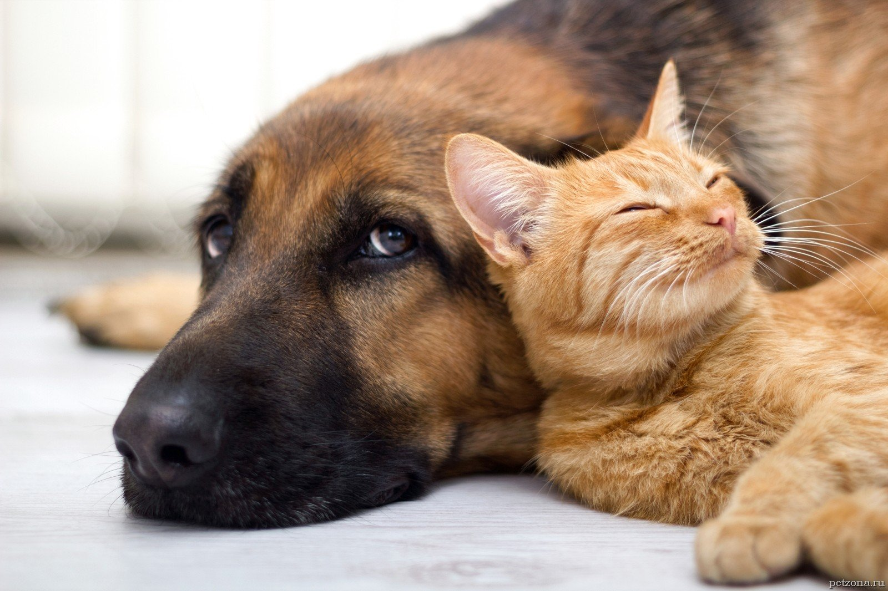
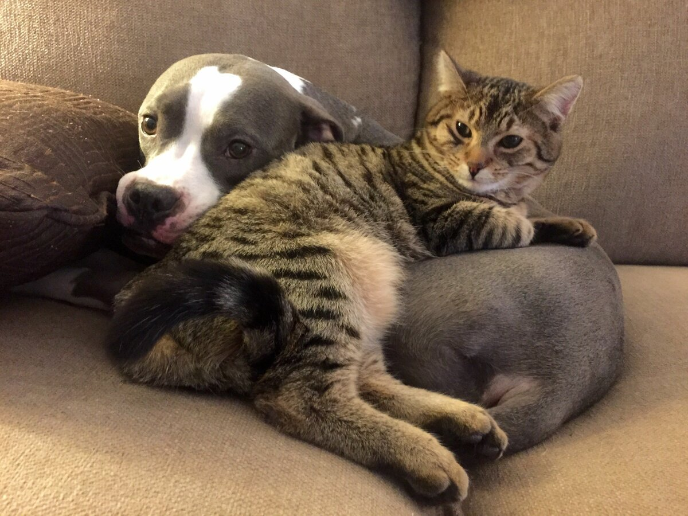

Save the animals - благодійний фонд, який піклується про долю безпритульних котів та собак у місті Одеса
Для зворотнього зв'язку з нашим фондом введіть, будь ласка, свої дані:
Питання безпритульних тварин є однією з найбільш актуальних проблем сучасного суспільства. З кожним роком кількість бездомних кішок та собак збільшується. Голодні, хворі, нещасні, з очима повними болю і відданості. Вони страждають від холоду і самотності та голодують. Кожній тварині потрібен господар, якого вона любитиме всім своїм маленьким серцем, відповідаючи на турботу нескінченною вірністю.

Наші основні завдання:
пропаганда гуманного та відповідального ставлення до тварин;
пропаганда гуманного та відповідального ставлення до тварин;
об'єднання конструктивних зоозахисних сил;
залучення населення до вирішення проблеми безпритульних тварин гуманними способами (пристрій тварин із притулків, стерилізація);
участь у реформуванні та вдосконаленні законодавства про захист тварин;
популяризація тварин, соціальна реклама;
запровадження комплексного вирішення проблеми безпритульних тварин у місті Одеса
Як допомогти безпритульним тваринам?
знайти тварині новий дім.
підтримати програму зі стерилізації та вакцинації.
оформити автоплатіж у благодійний фонд.
надати «автодопомогу».
забезпечити фото- та відео-підтримку, допомогти з поширенням інформації.
допомагати організовувати заходи та фотозони.
взяти тварину на тимчасову перетримку.
стати опікуном або куратором.

За посиланням нижче, Ви можете побачити скількі тварин потребують Вашої допомоги: